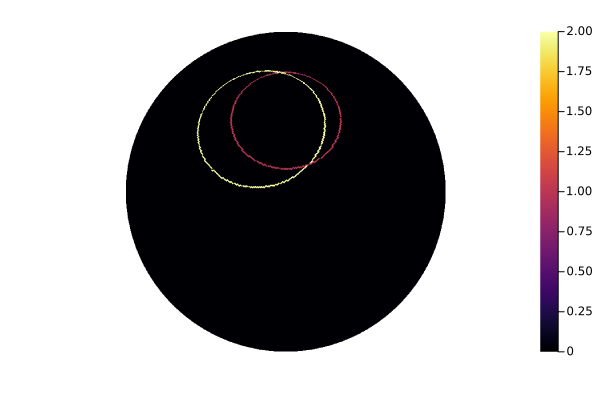

Pointing Reconstruction Model (PRM)
Starting from the scanning strategy described in Scanning strategy we can improve the model taking into account the non idealities of the system, parametrized by the so-called configuration angles.
The aim of the PRM is to calculate the pointing direction of a generic camera mounted on the STRIP telescope, given the control angles (encoding the positions of the azimuth and altitudes motors) as a function of time and the configuration angles describing the geometry of the telescope.
Geometry of the telescope
First, to understand all the control angles lets analyze a model of the telescope and its alt-az mount. A simplified model is reported in the following figure.

A basement holds a vertical axis (V-AXIS) allowing the Azimuth rotation, a fork mounted on the top of the V-AXIS holds the horizontal axis (H-AXIS) which allows the Altitude rotation. In an ideal case V-AXIS and H-AXIS are perpendicular and V-AXIS is aligned with the local (topocentric) zenith.
The rotation around the V-AXIS is performed by the ground motor, while the rotation around H-AXIS by the altitude motor. There is also a boresight motor that will be kept constant and equal to zero. The position of each motor is encoded by three angles (wheel1ang, wheel2ang, wheel3ang) that describe, respectively, the boresight, the altitude and the ground motor rotation.
Configuration angles
To describe the non idealities of the telescope we need nine angles, each of which represent a rotation around specific ($\hat{e}_x$, $\hat{e}_y$, $\hat{e}_z$) coordinate axis:
wheel1ang_0,wheel2ang_0,wheel3ang_0:encode the deviation of the zero point of the telescope's motors:
- wheel1 correspond to the boresight motor, and the zero point angle cause a rotation around the z-axis;
- wheel2 correspond to the altitude motor, and the zero point angle cause a rotation around the y-axis;
- wheel3 correspond to the ground motor, and the zero point angle cause a rotation around the z-axis.
forkang:encodes the deviation of orthogonality between the H-AXIS and the V-AXIS; as reported in the figure this angles cause a rotation of the system around the x-axis.
omegaVAXang,zVAXang:encode the deviation of the V-AXIS from the local vertical; zVax is the angle between V-AXIS and the local vertical, while omegaVAX is the azimuth of the ascending node (see the )
panang,tiltang,rollang:encode the camera orientation in the telescope reference frame: pan is a rotation around the x-axis, tilt is a rotation around the y-axis, roll is a rotation around the z-axis. With this convention a roll rotates the image seen by the camera around its center, a small pan (or tilt) shifts the image along the camera X (or Y) axis.


Pointing Reconstruction Method
PRM consist of calculate a chain of rotations to project the direction of sight of a generic camera into the Topocentric Horizontal Reference Frame (the ground r.f. of the telescope see telescopetoground).
For clarity, we can split the rotations in three steps ($R_i$ is a quaternion representing the rotation around the i axis):
\[\mathbf{R}^{(\mathrm{tel})} = R_x(\mathrm{panang})R_y(\mathrm{tiltang})R_z(\mathrm{rollang})\]
\[\mathbf{R}^{(\mathrm{V-AXIS})} = R_z(\mathrm{wheel3ang-wheel3ang_0})R_x(\mathrm{forkang})R_y(\mathrm{wheel2ang-wheel2ang_0})\]
\[\mathbf{R}^{(\mathrm{geo})} = R_z(\mathrm{\omega_{VAX}})R_x(\mathrm{z_{VAX}})\]
Taking as a reference Fig.1: the first step project the coordinates from the camera reference frame to the telescope r.f., then the second one from the telescope r.f. to the V-AXIS r.f. and at the last one from the V-AXIS r.f to the ground r.f.; the final rotation operator describing the projection of the coordinate axis of the camera reference frame into the local topocentric reference frame is: $\mathbf{R}^{(\mathrm{geo})} * \mathbf{R}^{(\mathrm{V-AXIS})} * \mathbf{R}^{(\mathrm{tel})}$.
This operator is the output of telescopetoground.
Example
Let's see a simple example, we'll now simulate the region of the sky observed by the telescope with and without the configuration angles (we will use very large values i.e. not a very realistic case). Just like for this example let's load all the needed packages:
using Plots
using Healpix
using StripelineWe can now define both the control angles (representing the motor position in function of time) and the configuration angles (representing the non idealities of the system):
telescope_motors(time_s) = (0.0, deg2rad(20.0), timetorotang(time_s, 1))
config_ang = configuration_angles(
forkang_rad = deg2rad(13.0),
zVAXang_rad = deg2rad(10.0),
omegaVAXang_rad = deg2rad(15.0)
)Now we can define a function that call genpointing with and without the non idealities and iterate over matrix containing the directions and set a specific value for each pixel in a Healpix map:
function project_to_map(time_range, map, config_ang)
# Call genpointings for the ideal case
dirs, _ = genpointings(
telescope_motors,
Float64[0, 0, 1],
time_range,
)
# Call genpointings for the non ideal case
dirs_nonideal, _ = genpointings(
telescope_motors,
Float64[0, 0, 1],
time_range,
config_ang = config_ang
)
# For each sample, set the corresponding pixel in the sky map to:
# 1 for the ideal case
# 2 for the non ideal case
for idx in 1:length(time_range)
colat, long = dirs[idx, :]
pixel_index = ang2pix(map, colat, long)
map[pixel_index] = 1
# Set the non ideal directions pixel
colat, long = dirs_nonideal[idx, :]
pixel_index = ang2pix(map, colat, long)
map[pixel_index] = 2
end
endFinally, we can create the map calling project_to_map and plotting the result:
map = HealpixMap{Float64, RingOrder}(128)
sampling_time_s = 0.05
project_to_map(0.0:sampling_time_s:60.0, map, config_ang)
plot(map, orthographic)
Where the pixels set to 2 are the non ideal case taking into account of the configuration angles (in this example only the forkand and the wobble angles) while the pixels set to 1 are the ideal case alredy discussed here
Reference Documentation
For a complete list of function used to reconstruct the scanning direction, see this.
Stripeline.ConfigAngles — TypeConfigAnglesAbstract type representing a set of configuration angles. Defining an abstract type is usefull because if you want to use differents angles or introduce new ones, you only have to define a new subtype and add a dedicated telescopetoground function dispatch.
Stripeline.configuration_angles — Typeconfiguration_angles(
wheel1ang_0_rad :: Float64 = 0,
wheel2ang_0_rad :: Float64 = 0,
wheel3ang_0_rad :: Float64 = 0,
forkang_rad :: Float64 = 0,
omegaVAXang_rad :: Float64 = 0,
zVAXang_rad :: Float64 = 0,
panang_rad :: Float64 = 0,
tiltang_rad :: Float64 = 0,
rollang_rad :: Float64 = 0,
)Struct containing the configuration angles for the telescope i.e. the angles describing the non idealities in the telescope (all of these parameters are considered equal to 0 in an ideal telescope):
(wheel1ang_0_rad, wheel2ang_0_rad, wheel3ang_0_rad): these are the zero points angles for the three motors (respectively the boresight, the altitude and the ground motor)
(forkang_rad): describe the deviation of orthogonality between the H-AXIS and the V-AXIS
(omegaVAXang_rad, zVAXang_rad): wobble angles encoding the deviation of the V-AXIS from the local vertical; zVAXang is the displacement from the V-AXIS, omegaVAXang is the azimuth of the ascending node.
(panang_rad, tiltang_rad, rollang_rad): Tait-Brian angles encoding the camera orientation in the telescope reference frame. Respectively around x,y and z axis.
See the documentation for a graphical rapresentation of each angles.
All of these angles must be expressed in RADIANS and measured anticlockwise.